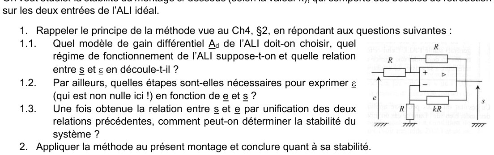
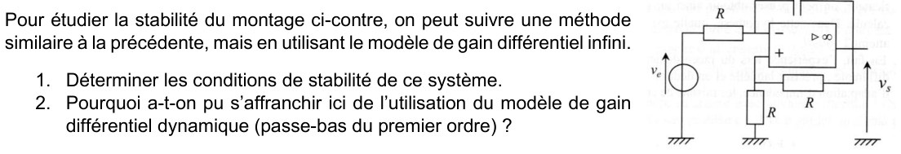
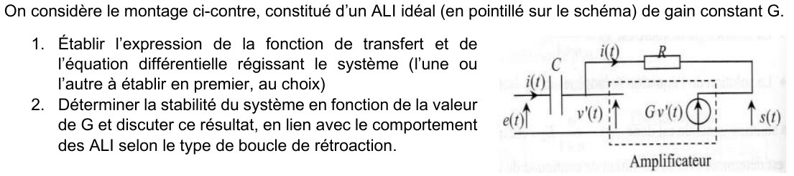

Ch4 — L'ALI en régime saturé : comparateurs et triggers de Schmitt
Quand la rétroaction d'un montage à ALI n'est pas exclusivement sur la borne (−), l'ALI fonctionne en régime saturé (Ch3, §1.3) : la sortie ne vaut plus que \(\pm V_{sat}\), indépendamment (au premier ordre) de l'entrée. On étudie ici le comparateur simple, le comparateur à hystérésis (trigger de Schmitt, inverseur et non inverseur), puis on justifie ces régimes en étudiant la stabilité de deux montages typiques avec le modèle de gain dynamique de l'ALI. AM2 · P2030 · Semestre 3 — D. Courtois, 24/09/2026.
1. Montages en régime saturé
1.1 · Le montage comparateur simple
Dans un montage comparateur simple, il n'y a aucune boucle de rétroaction : les deux entrées (+) et (−) sont indépendantes, directement reliées aux signaux à comparer.
Sans rétroaction, l'ALI amplifie la moindre différence \(\varepsilon\) avec son gain \(A_d\) énorme (\(\approx2\times10^5\)) : la sortie part instantanément dans un des deux états de saturation.
On utilise ce montage pour comparer un signal d'entrée \(e\), appliqué sur la borne (+), à une tension seuil constante \(E_0\) (\(E_0>0\) ici) appliquée sur la borne (−). Expliquer l'allure des oscillogrammes à partir de \(t=0\), en utilisant les mots : saturation haute, saturation basse et basculement. Indiquer sur le diagramme entrée-sortie \(s=f(e)\) les dates \(t=0,\,T/4,\,T/2,\,3T/4,\,T\) et les basculements. Prédire l'allure des spectres en fréquences des signaux d'entrée et de sortie.
1) Diagramme entrée-sortie \(s = f(e)\)
Étape 1 : le signe de \(\varepsilon\)
Ici \(v_+ = e\) et \(v_- = E_0\) :
\[ \varepsilon = e - E_0 \]Étape 2 : les deux états
- \(e > E_0\) : \(s = +V_{sat}\) (saturation haute).
- \(e < E_0\) : \(s = -V_{sat}\) (saturation basse).
Étape 3 : placer les dates
On prend \(e(t) = E_m\sin(2\pi t/T)\) avec \(E_m > E_0 > 0\) :
- \(t = 0,\ T/2,\ T\) : \(e = 0\), point \((0\,;\,-V_{sat})\).
- \(t = T/4\) : \(e = E_m\), point \((E_m\,;\,+V_{sat})\).
- \(t = 3T/4\) : \(e = -E_m\), point \((-E_m\,;\,-V_{sat})\).
- Les basculements ont lieu sur la verticale \(e = E_0\).
2) Oscillogrammes à partir de \(t = 0\)
Étape 1 : de \(0\) à \(T/4\)
À \(t = 0\), \(e = 0 < E_0\) : saturation basse. \(e\) croît et atteint \(E_0\) à l'instant \(t_1\) : basculement vers la saturation haute.
\[ E_m\sin\frac{2\pi t_1}{T} = E_0 \iff t_1 = \frac{T}{2\pi}\arcsin\frac{E_0}{E_m} \]Étape 2 : de \(T/4\) à \(T/2\)
À \(T/4\), \(e = E_m > E_0\) : saturation haute. \(e\) redescend et repasse sous \(E_0\) à \(t_2 = T/2 - t_1\) (symétrie du sinus autour de son maximum) : basculement vers la saturation basse.
Étape 3 : de \(T/2\) à \(T\)
\(e\) est négatif, donc toujours sous \(E_0\) : saturation basse jusqu'à \(T\). Le cycle recommence.
3) Spectres de l'entrée et de la sortie
- Entrée : une sinusoïde pure, donc une seule raie à \(f = 1/T\).
- Sortie : un créneau de même période, de rapport cyclique différent de 50 %. Il a une valeur moyenne non nulle et contient le fondamental \(f\) et toutes ses harmoniques (paires et impaires).
Refaire les trois figures de la Question 1 dans le cas où on applique \(e(t)\) sur (−) et \(E_0>0\) sur (+).
1) Diagramme entrée-sortie
Étape 1 : le signe de \(\varepsilon\)
Ici \(v_+ = E_0\) et \(v_- = e\) :
\[ \varepsilon = E_0 - e \]Étape 2 : les deux états
- \(e < E_0\) : \(\varepsilon > 0\), \(s = +V_{sat}\).
- \(e > E_0\) : \(\varepsilon < 0\), \(s = -V_{sat}\).
2) Oscillogrammes
Les basculements ont lieu aux mêmes instants \(t_1\) et \(T/2 - t_1\), mais les états haut et bas sont échangés : \(s\) est en saturation haute presque toute la période, et en saturation basse autour de chaque maximum de \(e\).
3) Spectres
1.2 · Le montage comparateur à hystérésis non inverseur (Trigger de Schmitt non inverseur)
Dans ce montage, on a \(v_-=0\) (borne (−) à la masse) donc \(v_+=\varepsilon\). On utilise la LNTP (Millman, Ch3 §3.2) à la borne (+), avec les deux branches \(R_1\) (vers \(v_e\)) et \(R_2\) (vers \(v_s\), rétroaction) qui s'y rejoignent :
\[ \varepsilon=v_+=\frac{R_2v_e+R_1v_s}{R_1+R_2} \]- Quand l'ALI est en saturation haute \(v_s=+V_{sat}\) : il y reste tant que \(\varepsilon>0\Leftrightarrow v_e>-\dfrac{R_1}{R_2}V_{sat}\), et il bascule en saturation basse dès que \(\varepsilon<0\Leftrightarrow v_e<-\dfrac{R_1}{R_2}V_{sat}\).
- Quand l'ALI est en saturation basse \(v_s=-V_{sat}\) : il y reste tant que \(\varepsilon<0\Leftrightarrow v_e<+\dfrac{R_1}{R_2}V_{sat}\), et il bascule en saturation haute dès que \(\varepsilon>0\Leftrightarrow v_e>+\dfrac{R_1}{R_2}V_{sat}\).
Justifier la pertinence de ce type de montage (comparateur à hystérésis) dans des dispositifs de régulation TOR (Tout-Ou-Rien).
Intérêt de l'hystérésis pour une régulation TOR
Étape 1 : le principe d'une régulation TOR
On compare une grandeur mesurée (température, niveau…) à un seuil, et on commande un actionneur en tout ou rien (chauffage marche/arrêt).
Étape 2 : le problème d'un seuil unique
Avec un comparateur simple, la mesure est toujours un peu bruitée. Autour du seuil, le bruit le fait franchir dans un sens puis dans l'autre : le relais bascule sans arrêt. Il s'use vite, et l'actionneur aussi.
Étape 3 : ce qu'apporte l'hystérésis
Il y a deux seuils, \(+\beta V_{sat}\) et \(-\beta V_{sat}\). Entre les deux, le montage garde son état : un bruit plus petit que l'écart entre les seuils ne provoque aucun basculement.
1.3 · Autres montages comparateurs à hystérésis
Refaire l'étude complète (schéma du montage, expression de \(\varepsilon\), conditions de basculement selon l'état initial, diagramme entrée-sortie et effet sur un signal sinusoïdal) pour un montage comparateur à hystérésis inverseur (symétrique). On montrera que les basculements se produisent pour \(v_e=\pm\dfrac{R_1}{R_1+R_2}V_{sat}\).
1) Montage et expression de \(\varepsilon\)
Étape 1 : le montage
- \(v_e\) est appliquée directement sur l'entrée (−).
- L'entrée (+) est au milieu d'un pont : \(R_1\) vers la masse, \(R_2\) vers la sortie (rétroaction positive).
Étape 2 : potentiel de l'entrée (+)
On note \(\beta' = \dfrac{R_1}{R_1 + R_2}\), donc \(v_+ = \beta' v_s\).
Étape 3 : expression de \(\varepsilon\)
\[ \varepsilon = v_+ - v_- = \beta'\,v_s - v_e \]2) Conditions de basculement
Étape 1 : départ en saturation haute (\(v_s = +V_{sat}\))
\(\varepsilon = \beta' V_{sat} - v_e\). Il reste positif tant que \(v_e < \beta' V_{sat}\). Dès que \(v_e\) dépasse \(+\beta' V_{sat}\), \(\varepsilon\) devient négatif : basculement vers \(-V_{sat}\).
Étape 2 : départ en saturation basse (\(v_s = -V_{sat}\))
\(\varepsilon = -\beta' V_{sat} - v_e\). Il reste négatif tant que \(v_e > -\beta' V_{sat}\). Dès que \(v_e\) passe sous \(-\beta' V_{sat}\) : basculement vers \(+V_{sat}\).
3) Diagramme entrée-sortie
4) Effet sur un signal sinusoïdal
On prend \(v_e = E_m\sin(2\pi t/T)\) avec \(E_m > \beta' V_{sat}\).
- Quand \(v_e\) monte et atteint \(+\beta' V_{sat}\), la sortie passe à \(-V_{sat}\).
- Quand \(v_e\) descend et atteint \(-\beta' V_{sat}\), la sortie passe à \(+V_{sat}\).
- Les deux seuils sont symétriques : la sortie est un créneau inversé de rapport cyclique 50 %.
- Chaque basculement arrive un peu après le passage de \(v_e\) par 0, avec un retard \(t_0 = \dfrac{T}{2\pi}\arcsin\dfrac{\beta' V_{sat}}{E_m}\).
5) Bonus : cas non symétrique (non inverseur avec seuil \(E_0\))
Étape 1 : le montage
Topologie non inverseuse du §1.2 : \(v_e\) arrive sur (+) par \(R_1\), la sortie revient sur (+) par \(R_2\), et l'entrée (−) reçoit \(E_0\) au lieu de la masse.
Étape 2 : potentiel de l'entrée (+)
Étape 3 : condition de basculement \(v_+ = v_- = E_0\)
\[ R_2\,v_e + R_1\,v_s = (R_1 + R_2)\,E_0 \] \[ v_e = \left(1 + \frac{R_1}{R_2}\right)E_0 - \frac{R_1}{R_2}\,v_s \]On remplace \(v_s\) par \(+V_{sat}\) puis \(-V_{sat}\).
2. Analyse du comportement d'un ALI idéal du premier ordre — stabilité
2.1 · Modèle de l'ALI idéal de gain dynamique (filtre passe-bas du premier ordre)
\[ \underline{A_d}(j\omega)=\frac{\underline{v_s}}{\underline\varepsilon}=\mu_0\frac{1}{1+j\omega\tau} =\mu_0\frac{1}{1+j\omega/\omega_0} \]Dans ce modèle, le gain \(\mu_0\) n'est plus infini (mais il reste très grand, \(\approx2\times10^5\)). On va constater l'intérêt de ce modèle pour étudier la stabilité de deux montages typiques (dont on connaît déjà le comportement en régime établi), en supposant au départ qu'ils fonctionnent en régime linéaire (car \(\underline{A_d}(j\omega)\) n'a de sens qu'en régime linéaire).
2.2 · Stabilité du montage amplificateur non inverseur
On reprend le montage non inverseur du Ch3 (§3.2), mais sans supposer \(\varepsilon=0\) : la borne (−) est le point milieu du pont diviseur \(R_1\)/\(R_2\), donc \(v_-=\dfrac{R_1}{R_1+R_2}v_s\), et \(v_+=v_e\) :
\[ \varepsilon=v_+-v_-=v_e-\frac{R_1}{R_1+R_2}v_s \]En injectant \(v_s=\underline{A_d}\,\varepsilon=\mu_0\dfrac{1}{1+j\omega\tau}\,\varepsilon\) :
\[ v_s(1+j\omega\tau)=\mu_0\Big(v_e-\frac{R_1}{R_1+R_2}v_s\Big) \ \Longrightarrow\ v_s\Big(1+\mu_0\frac{R_1}{R_1+R_2}+j\omega\tau\Big)=\mu_0v_e \] \[ \boxed{\ \underline H=\frac{v_s}{v_e}=\frac{\mu_0}{1+\mu_0\dfrac{R_1}{R_1+R_2}+j\omega\tau}\ } \]On reconnaît une fonction de transfert typique d'un filtre passe-bas du premier ordre. Les deux coefficients du dénominateur — le terme constant \(1+\mu_0\dfrac{R_1}{R_1+R_2}\) et le coefficient \(\tau\) de \(j\omega\) — sont tous deux strictement positifs (\(\mu_0>0\), résistances \(>0\), \(\tau>0\)) : ils sont de même signe.
2.3 · Stabilité du montage comparateur à hystérésis inverseur
On reprend le montage du §1.3 (Question 4), toujours sans supposer \(\varepsilon=0\) : \(v_-=v_e\) et \(v_+=\dfrac{R_1}{R_1+R_2}v_s\), donc :
\[ \varepsilon=v_+-v_-=\frac{R_1}{R_1+R_2}v_s-v_e \]En injectant à nouveau \(v_s=\mu_0\dfrac{1}{1+j\omega\tau}\,\varepsilon\) :
\[ v_s(1+j\omega\tau)=\mu_0\Big(\frac{R_1}{R_1+R_2}v_s-v_e\Big) \ \Longrightarrow\ v_s\Big(1-\mu_0\frac{R_1}{R_1+R_2}+j\omega\tau\Big)=-\mu_0v_e \] \[ \boxed{\ \underline H=\frac{v_s}{v_e}=\frac{-\mu_0}{1-\mu_0\dfrac{R_1}{R_1+R_2}+j\omega\tau}\ } \]Le terme constant du dénominateur, \(1-\mu_0\dfrac{R_1}{R_1+R_2}\), est fortement négatif puisque \(\mu_0\) est très grand (\(\approx2\times10^5\)) : le produit \(\mu_0\dfrac{R_1}{R_1+R_2}\) domine largement le \(1\). Le coefficient de \(j\omega\), \(\tau\), reste positif. Les deux coefficients du dénominateur sont donc de signes opposés.
2. Exercices créés — à partir du TP4 (comparateurs)
Le TP4 (« Quelques comparateurs ») est un TP de laboratoire : câblage, oscilloscope, FFT. Il n'existe pas de fichier « Exos4 » officiel pour ce chapitre. Les trois exercices ci-dessous reprennent les parties calculatoires du TP4 (dimensionnement, relations, prédictions), avec une correction complète — les manipulations purement expérimentales (câblage, lecture d'oscilloscope) ne sont pas reproductibles ici et sont volontairement laissées de côté.
On veut réaliser un montage à ALI qui, pour une entrée sinusoïdale symétrique d'amplitude \(5{,}0\) V et de fréquence \(100\) Hz, donne en sortie un signal créneau inversé (\(v_s>0\) quand \(v_e<0\) et réciproquement), de même fréquence et d'amplitude \(V_{sat}=15\) V. a) Identifier et nommer ce montage ; schématiser le diagramme entrée-sortie attendu. b) Proposer un montage vu au Ch3 (avec une rétroaction sur la borne (−)) qui donnerait un résultat similaire, et dimensionner ses résistances.
a) Identifier le montage
Étape 1 : traduire le cahier des charges
On veut \(v_s = +V_{sat}\) si \(v_e < 0\), et \(v_s = -V_{sat}\) si \(v_e > 0\). Il faut donc \(\varepsilon = -v_e\).
Étape 2 : le branchement
\(v_e\) sur l'entrée (−), la masse sur l'entrée (+), aucune rétroaction. C'est le cas \(E_0 = 0\) de la Question 2.
\[ v_s = +V_{sat}\ \text{si}\ v_e < 0 \qquad\qquad v_s = -V_{sat}\ \text{si}\ v_e > 0 \]b) Un montage du Ch3 qui donne un résultat voisin
Étape 1 : l'idée
On prend un amplificateur inverseur (Ch3, Q10) avec un gain très grand : il sature presque tout le temps, et sa sortie ressemble à un créneau inversé.
Étape 2 : condition de saturation
Étape 3 : dimensionnement
On prend un gain bien plus grand que 3 : \(R_1 = 100\ \Omega\) et \(R_2 = 10\) kΩ, soit un gain de 100.
La sortie quitte la saturation seulement quand \(|v_e| < \dfrac{V_{sat}}{100} = 0{,}15\) V, c'est-à-dire pendant un instant très court autour de chaque passage par zéro de \(v_e\) (\(0{,}15\) V est très petit devant \(5{,}0\) V).
On réalise un montage comparateur simple non inverseur qui compare une tension d'entrée triangulaire symétrique d'amplitude \(E_m=10\) V et \(f=100\) Hz à une tension de référence continue \(V_{réf}>0\), prélevée aux bornes d'une résistance \(R=100\ \Omega\) après division de la tension d'alimentation \(V_{CC}=+15\) V par un pont diviseur \(R\)/\(R_{var}\). On appelle rapport cyclique en saturation haute, noté \(\alpha\), le pourcentage de temps durant lequel la sortie est bloquée en saturation haute. a) Trouver la relation entre \(\alpha\), \(V_{réf}\) et \(E_m\) pour un signal d'entrée triangulaire. b) Calculer \(V_{réf}\) pour \(\alpha=20\%\), puis la valeur de \(R_{var}\) nécessaire. c) Prédire la variation de \(\alpha\) avec \(V_{réf}\), et comment obtenir \(\alpha>50\%\).
a) Relation entre \(\alpha\), \(V_{réf}\) et \(E_m\)
Étape 1 : équation de la montée du triangle
On part de \(e = -E_m\) à \(t = 0\) ; \(e\) monte linéairement jusqu'à \(+E_m\) en \(T/2\). Elle varie de \(2E_m\) en \(T/2\), donc sa pente vaut \(4E_m/T\) :
\[ e(t) = -E_m + \frac{4E_m}{T}\,t \qquad (0 \le t \le T/2) \]Étape 2 : instant de franchissement
Le comparateur non inverseur donne \(s = +V_{sat}\) quand \(e > V_{réf}\). On résout \(e(t) = V_{réf}\) :
\[ t_{montée} = \frac{T\,(E_m + V_{réf})}{4E_m} \]Étape 3 : temps passé au-dessus de \(V_{réf}\)
Pendant la montée, de \(t_{montée}\) à \(T/2\) :
\[ \frac{T}{2} - t_{montée} = \frac{T\,(E_m - V_{réf})}{4E_m} \]La descente est le miroir de la montée : même durée. Au total :
\[ t_{haut} = 2\times\frac{T\,(E_m - V_{réf})}{4E_m} = \frac{T\,(E_m - V_{réf})}{2E_m} \]Vérification : \(V_{réf} = 0\) donne \(\alpha = 50\ \%\) ; \(V_{réf} \to E_m\) donne \(\alpha \to 0\).
b) \(V_{réf}\) pour \(\alpha = 20\ \%\), puis \(R_{var}\)
Étape 1 : la tension de référence
\[ 0{,}2 = \frac12\left(1 - \frac{V_{réf}}{10}\right) \iff \frac{V_{réf}}{10} = 0{,}6 \iff V_{réf} = 6{,}0\ \text{V} \]Étape 2 : le pont diviseur
c) Variation de \(\alpha\) avec \(V_{réf}\) ; obtenir \(\alpha > 50\ \%\)
- \(\alpha = \dfrac12 - \dfrac{V_{réf}}{2E_m}\) est une fonction affine décroissante de \(V_{réf}\).
- Quand \(R_{var}\) augmente, \(V_{réf}\) diminue, donc \(\alpha\) augmente.
- \(\alpha > 50\ \%\) exige \(V_{réf} < 0\) : impossible avec un pont alimenté par \(+V_{CC}\).
On veut réaliser un montage comparateur à hystérésis inverseur symétrique (§1.3), avec les deux résistances disponibles au labo (\(R=100\ \Omega\) fixe et \(R_{var}\) réglable), de manière à observer un basculement à \(\pm3\) V (avec \(V_{sat}=15\) V). a) Calculer la valeur de \(R_{var}\) nécessaire. b) Discuter de l'effet d'une variation de \(R_{var}\) sur le cycle d'hystérésis. c) Est-il pertinent de discuter d'un rapport cyclique pour ce montage ?
a) Valeur de \(R_{var}\)
Étape 1 : la condition sur les seuils
Étape 2 : choix des résistances
On prend \(R_1 = R = 100\ \Omega\) (entre (+) et la masse) et \(R_2 = R_{var}\) (entre la sortie et (+)) : c'est la résistance réglable qui ajuste le seuil.
\[ R_{var} = 4\times100 = 400\ \Omega \]b) Effet d'une variation de \(R_{var}\)
Le seuil vaut \(\beta' V_{sat}\) avec \(\beta' = \dfrac{100}{100 + R_{var}}\).
- \(R_{var}\) augmente : \(\beta'\) diminue, le seuil se rapproche de 0, le cycle se resserre.
- \(R_{var} \to 0\) : \(\beta' \to 1\), seuil vers 15 V, cycle le plus large.
- \(R_{var} \to \infty\) : \(\beta' \to 0\), l'hystérésis disparaît ; on retrouve le comparateur simple inverseur (Exercice 1a).
c) Un rapport cyclique a-t-il un sens ?
L'entrée est une sinusoïde symétrique et les seuils \(\pm3\) V sont symétriques : la sortie passe autant de temps en haut qu'en bas.
3. Activité du Ch4 — Stabilité des montages avec ALI (corrigé intégral)
Activité du 01/10/2026 (D. Courtois, AEM2 P2030 S3). Objectif : déterminer la stabilité d'un montage à ALI avec trois outils : (1) le modèle de gain dynamique \(\underline{A_d}\) quand il y a de la rétroaction sur les deux entrées, (2) le modèle de gain infini, (3) un gain constant \(G\).
- Modèle \(\underline{A_d}=\dfrac{\mu_0}{1+j\omega\tau}\) (\(\mu_0\approx2\times10^5\), \(\tau>0\)), ALI supposé en régime linéaire : \(\underline s=\underline{A_d}\,\underline\varepsilon\) avec \(\underline\varepsilon\neq0\).
- Exprimer \(v_+\) et \(v_-\) en fonction de \(\underline e\) et \(\underline s\) (diviseur de tension, ou Millman/superposition), puis \(\underline\varepsilon=v_+-v_-\).
- Injecter dans \(\underline s(1+j\omega\tau)=\mu_0\underline\varepsilon\) et mettre sous la forme \(\underline H=\dfrac{N}{a_0+a_1\,j\omega}\) (dénominateur de degré 1).
- Stable ssi \(a_0\) et \(a_1\) sont de même signe (équation différentielle \(a_1\dot s+a_0 s=\dots\) : solution homogène \(e^{-a_0t/a_1}\), qui décroît ssi \(a_0/a_1>0\)). Sinon instable : l'ALI sort du régime linéaire et sature.

Question 1.1 — Modèle, régime et relation entre \(\underline s\) et \(\underline\varepsilon\)
Étape 1 : choix du modèle
Ici on ne sait pas si \(\varepsilon = 0\) : on ne peut pas utiliser le modèle de gain infini. On prend le modèle de gain dynamique (passe-bas du 1ᵉʳ ordre) :
Étape 2 : régime
On suppose le régime linéaire : c'est le seul cas où \(\underline A_d\) a un sens.
Question 1.2 — Étapes pour exprimer \(\underline\varepsilon\) en fonction de \(\underline e\) et \(\underline s\)
- Étape 1 : écrire \(\underline\varepsilon = \underline v_+ - \underline v_-\).
- Étape 2 : calculer \(\underline v_+\) en fonction de \(\underline e\) et \(\underline s\) (Millman, courant d'entrée nul).
- Étape 3 : calculer \(\underline v_-\) en fonction de \(\underline s\) (pont diviseur).
- Étape 4 : faire la différence.
Question 1.3 — Comment conclure sur la stabilité ?
On remplace \(\underline\varepsilon\) dans \(\underline s\,(1 + j\omega\tau) = \mu_0\,\underline\varepsilon\), on isole \(\underline s\) et on obtient \(\underline H = \underline s/\underline e\), de dénominateur \(a_0 + a_1\,j\omega\).
Question 2 — Application au montage
Étape 1 : le montage
\(R\) entre \(e\) et (+) ; \(R\) entre \(s\) et (+) ; \(R\) entre (−) et la masse ; \(kR\) entre \(s\) et (−), avec \(k > 0\). Courants d'entrée nuls.
Étape 2 : potentiel de (+)
Étape 3 : potentiel de (−)
Étape 4 : expression de \(\underline\varepsilon\)
\[ \underline\varepsilon = \frac{\underline e}{2} + \underline s\left(\frac12 - \frac{1}{1 + k}\right) = \frac{\underline e}{2} + \underline s\,\frac{k - 1}{2(k + 1)} \]Étape 5 : fonction de transfert
On remplace dans \(\underline s\,(1 + j\omega\tau) = \mu_0\,\underline\varepsilon\) et on regroupe les termes en \(\underline s\) :
\[ \underline s\left(1 - \mu_0\,\frac{k - 1}{2(k + 1)} + j\omega\tau\right) = \frac{\mu_0}{2}\,\underline e \] \[ \underline H = \frac{\mu_0/2}{1 - \mu_0\,\dfrac{k - 1}{2(k + 1)} + j\omega\tau} \]Étape 6 : condition de stabilité
\(a_1 = \tau > 0\). Il faut donc \(a_0 > 0\) :
\[ 1 - \mu_0\,\frac{k - 1}{2(k + 1)} > 0 \iff 2(k + 1) > \mu_0(k - 1) \iff k\,(\mu_0 - 2) < \mu_0 + 2 \] \[ k < \frac{\mu_0 + 2}{\mu_0 - 2} \approx 1 + \frac{4}{\mu_0} \]Avec \(\mu_0 = 2\times10^5\) : \(\dfrac{\mu_0 + 2}{\mu_0 - 2} \approx 1{,}00002\).

Question 1 — Conditions de stabilité
Étape 1 : le montage et le modèle
\(v_e\) alimente \(R\) vers (−) ; \(C\) relie (−) à la sortie ; sur (+), deux résistances \(R\) (une vers la masse, une vers \(s\)). On note \(\theta = RC\). Modèle de gain infini en régime linéaire : \(v_+ = v_-\).
Étape 2 : potentiel de (+)
Pont de deux résistances égales : \(v_+ = \dfrac{v_s}{2}\), donc \(v_- = \dfrac{v_s}{2}\).
Étape 3 : loi des nœuds en (−)
Le courant qui arrive par \(R\) traverse \(C\) (courant d'entrée nul) :
\[ \frac{v_e - v_-}{R} = C\,\frac{d(v_- - v_s)}{dt} \] \[ \frac{v_e - \frac{v_s}{2}}{R} = C\,\frac{d}{dt}\left(\frac{v_s}{2} - v_s\right) = -\frac{C}{2}\,\frac{dv_s}{dt} \]On multiplie par \(2R\) :
\[ RC\,\frac{dv_s}{dt} - v_s = -2\,v_e \]Étape 4 : stabilité
En complexes : \(\underline H = \dfrac{2}{1 - j\omega RC}\). Dénominateur \(a_0 + a_1\,j\omega\) avec \(a_0 = 1 > 0\) et \(a_1 = -RC < 0\) : signes opposés.
La solution homogène \(v_s = A\,e^{t/RC}\) diverge.
Question 2 — Pourquoi se passer du modèle de gain dynamique ?
Étape 1 : refaire le calcul avec \(\underline A_d\)
Millman en (−) : \(\underline v_- = \dfrac{\underline e + j\omega\theta\,\underline s}{1 + j\omega\theta}\). Donc :
\[ \underline\varepsilon = \frac{\underline s}{2} - \frac{\underline e + j\omega\theta\,\underline s}{1 + j\omega\theta} = \frac{\underline s\,(1 - j\omega\theta)/2 - \underline e}{1 + j\omega\theta} \]Étape 2 : le dénominateur de \(\underline H\)
Avec \(\underline s\,(1 + j\omega\tau) = \mu_0\,\underline\varepsilon\) et \(p = j\omega\) :
\[ \tau\theta\,p^2 + \left(\tau + \theta + \frac{\mu_0\theta}{2}\right)p + \left(1 - \frac{\mu_0}{2}\right) \]Le terme constant est négatif (\(\mu_0 \gg 2\)), les deux autres positifs : instable. Les racines valent environ \(p \approx +\dfrac{1}{RC}\) (pôle instable, lent) et \(p \approx -\dfrac{\mu_0}{2\tau}\) (pôle stable, très rapide).

Question 1 — Fonction de transfert et équation différentielle
Étape 1 : les lois de comportement
Étape 2 : on égalise les deux expressions de \(i\)
\[ C\,\frac{de}{dt} - C\,\frac{dv'}{dt} = \frac{v'\,(1 - G)}{R} \] \[ RC\,\frac{dv'}{dt} + (1 - G)\,v' = RC\,\frac{de}{dt} \]Étape 3 : on passe à \(s\)
On multiplie par \(G\), avec \(s = G\,v'\) :
\[ RC\,\frac{ds}{dt} + (1 - G)\,s = G\,RC\,\frac{de}{dt} \]Étape 4 : en complexes
Question 2 — Stabilité en fonction de \(G\)
Étape 1 : le critère
Dénominateur : \(a_0 = 1 - G\) et \(a_1 = RC > 0\). Stable si \(a_0 > 0\).
Étape 2 : lien avec les ALI
- La sortie revient sur l'entrée non inverseuse de l'amplificateur : rétroaction positive. Au-delà de \(G = 1\), le système diverge.
- Un vrai ALI a \(\mu_0 \approx 2\times10^5 \gg 1\) : une rétroaction sur (+) seule rend donc toujours le montage instable, d'où le régime saturé.
- Avec une boucle sur l'entrée inverseuse (\(s = -G\,v'\)), on aurait \(a_0 = 1 + G > 0\) : stable pour tout \(G\). C'est la rétroaction négative, régime linéaire.
📂 Documents donnés
Fichiers originaux du cours et du TP, déjà présents dans ce dossier. Cliquez pour ouvrir.
Cursus AM2 · P2030 · Semestre 3 · Partie Électronique, D. Courtois, Cours4 du 24/09/2026 et TP4 du 30/09/2026. Ce chapitre prolonge le Ch3 — ALI en régime linéaire : mêmes notations (\(\varepsilon\), \(v_+\), \(v_-\), \(V_{sat}\)), même règle de régime (rétroaction exclusive sur (−) ⟹ linéaire), désormais appliquée au cas où cette règle n'est pas respectée.